Design System
Three products, 340+ scattered components, and three teams who didn't choose to work together. Orchid is the shared design language that made convergence possible.
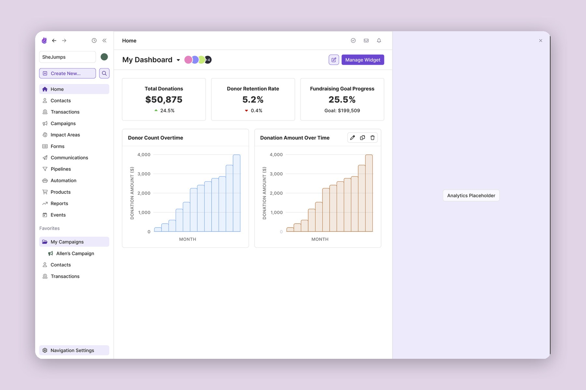
After Keela's acquisition by Aplos, three products needed to become one, and the first thing a shared customer would notice wasn't a missing feature, it was three different visual languages answering the same question. Each product had its own component libraries, color palettes, spacing scales, and interaction patterns. The inconsistency was visible to users and frustrating for the teams building across products.
But here's what I recognized early: this wasn't a design system problem. It was a culture problem. The real challenge was getting three teams with different histories and priorities to build on shared foundations. You can't mandate that.
Previous design system efforts had died because they couldn't secure dedicated engineering time. I pitched Orchid differently.
Before the pitch, I ran internal surveys across five departments: Engineering, Customer Care, Sales, Marketing, and Product. The goal was to surface recurring problems that leadership could see in their own teams' words, not just hear from design.
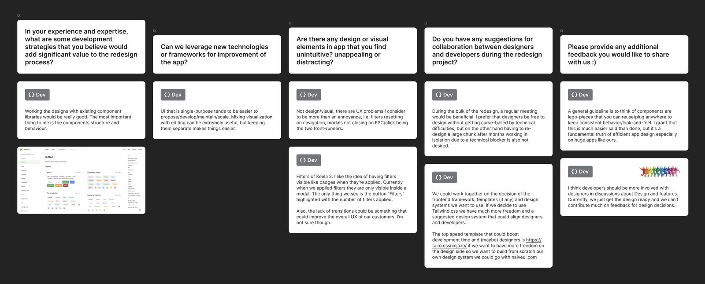
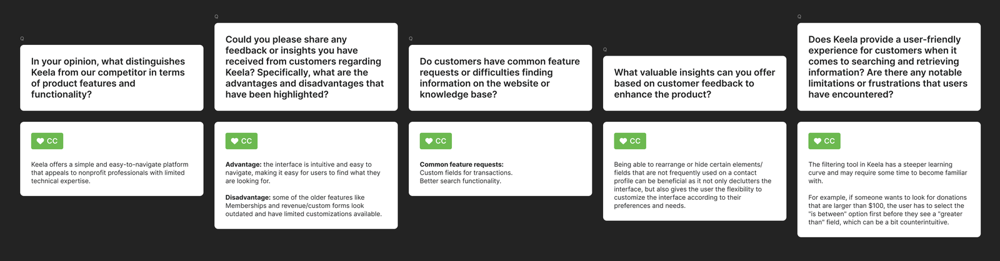
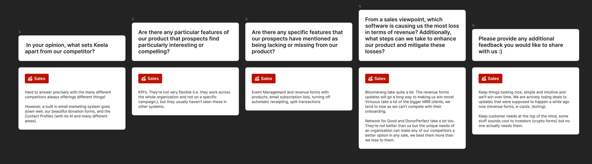
The survey data let me tie the design system investment to three concrete numbers: faster feature delivery, less QA rework, and a coherent experience that would smooth the product merger. We got two dedicated frontend engineers. First time a design system had earned that at Keela.
I ran a full inventory across all three products: 340+ unique components. Through workshops with each team (not presentations to them), we distilled those down to 86 foundational primitives covering 95% of interface needs.
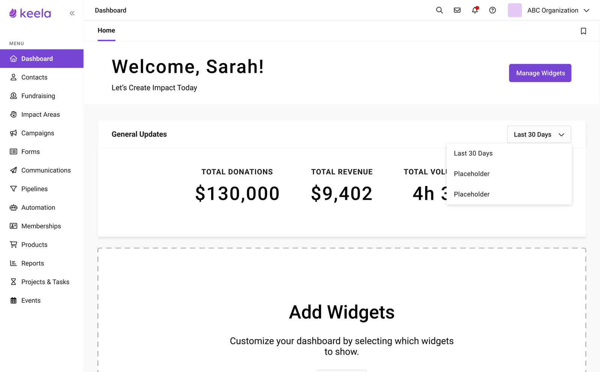
Orchid is built on a token foundation. Colors, spacing, typography, elevation, and motion are all defined as tokens flowing from Figma variables to code constants. This architecture enables theming, ensures design-dev parity, and provides the backbone for eventual product unification.
We adopted Storybook integrated with Chromatic to give the design team a workflow linked to GitHub. Components live in Storybook as the canonical reference for both design and engineering. Chromatic runs visual regression tests on every PR so inconsistencies surface before release, not after.
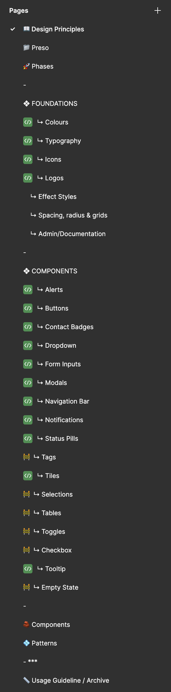
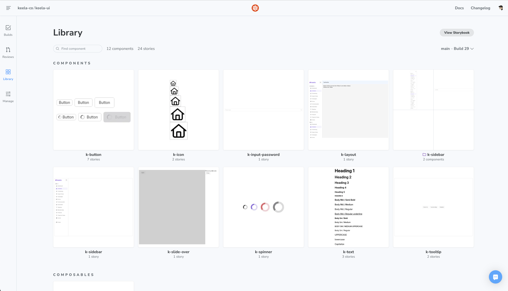
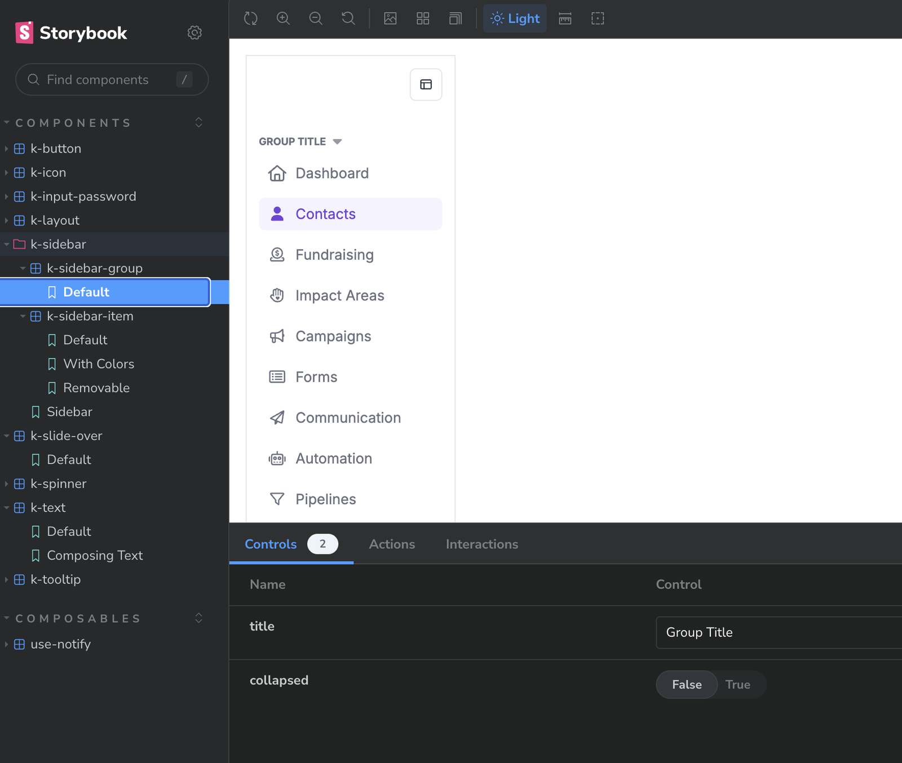
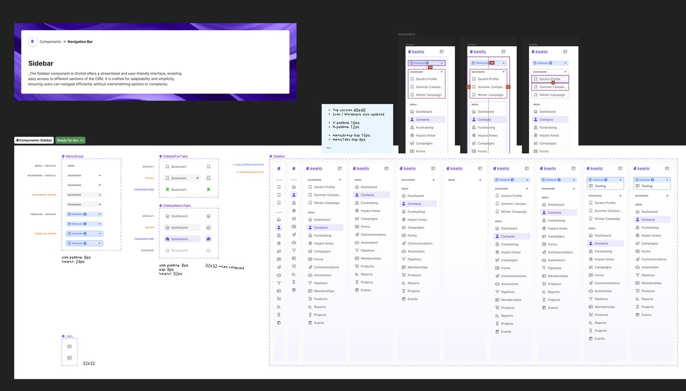
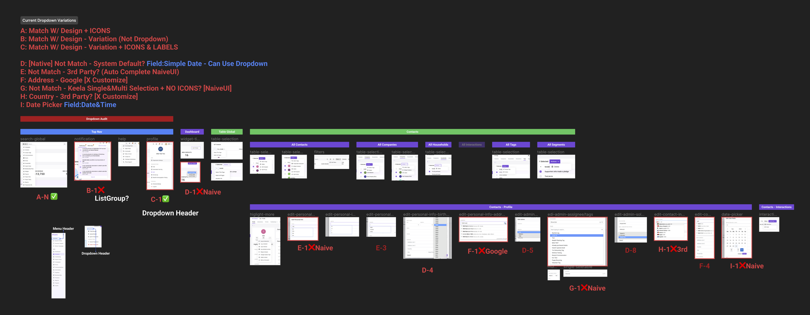
The easy path for a system this size is tight governance, the kind that protects quality by slowing everyone down. I built exactly that first, and contribution proposals dropped to near zero. I decided the formality itself was the problem, not the people ignoring it, and rebuilt around async reviews, a 48-hour turnaround, and lightweight templates. Proposals doubled overnight. Governance should reduce friction, not create it. That was a hard lesson.
I had no direct authority over most of the people who needed to adopt Orchid. What worked:
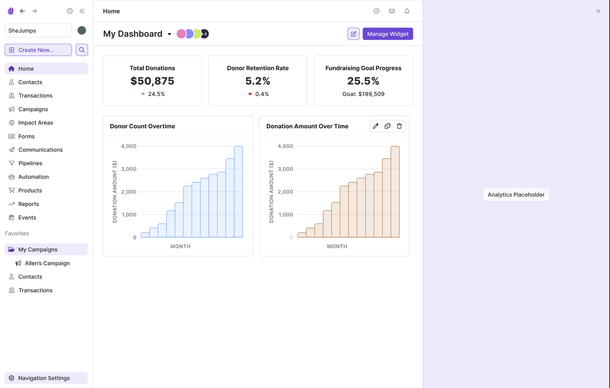
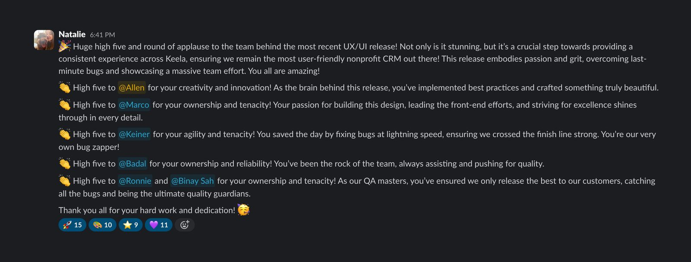
A design system nobody contributes to is just a style guide with extra steps. The contribution model is what kept Orchid from becoming that.